Editors
Armor
The armor editor is intact from its FFHackster incarnation.
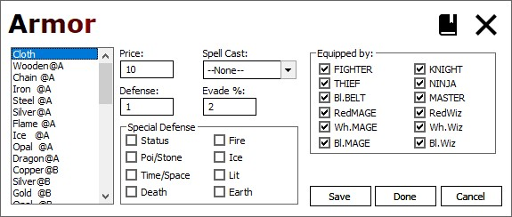
| Field | Range | Detail |
|---|---|---|
| Price | 0-65535 | The purchase cost of the item |
| Spell Cast | Droplist | The spell the armor casts if used in battle |
| Defense | 0-255 | The armor's ABSORB rating (reduces damage) |
| Evade % | 0-255 | The armor's EVADE rating (avoid attacks) |
| Special Defense | Flags | Elemental flags against which the armor reduces damage |
| Equipped By | Flags | Flags to mark which classes can requip the armor |
| Equipped By | Flags | Flags to mark which classes can requip the armor |
Special Attacks
The attacks editor is largely unchanged from FFH; it now exposes all 8 bits of the "negative effect" effectivity flags.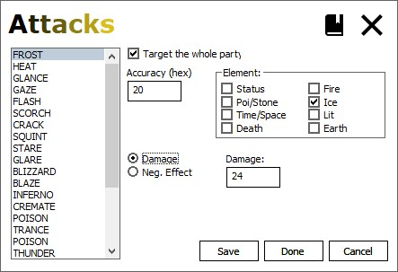
| Field | Range | Detail |
|---|---|---|
| Target whole party | Check | Check to have the attack hit all player characters |
| Accuracy | 0-FF (hex) | The accuracy value of the attack |
| Element | Flags | Elemental flags used by the attack |
| Damage/Neg Effect | Radio | Determine if tthe attack inflicts damage or an effect |
| Damage | 0-255 | Base damage inflicted by the attack |
| Effect | Flags | Effect flags to inflict on the target |
Battles
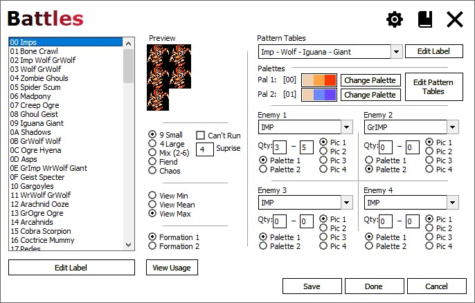
| Field | Detail |
|---|---|
| Enemy Arrangement | Specifies which arrangement this enemy group uses, affecting the max number
of enemies and how they are displayed. This option must match the pattern table used for the battle, or the enemies will display incorrectly. For example, a pattern table formatted as a FIEND must use the Fiend option, or the fiends using the table will be misdrawn (usually in pieces). |
| Can't Run | |
| Surprise | A byte value, this is the chance for the enemy group to ambush the player party. Typical range 0-90, the higher the number, the more likely an ambush becomes. See the GameFaqs FF Formulas thread for more detail on how this value is used in battle. https://gamefaqs.gamespot.com/boards/522595-final-fantasy/41701255 |
| Views | Choose to view the minimum, mean (average), or maximum enemy arrangement. The game stops adding enemies once it reaches 9, and this editor follows suit. |
| Formation 1-2 | Choose the formation for this battle. All battles have two formations, with the
second formation only using Enemy tpes 1 and 2. The second formation has its own Quantities for Enemy types 1 and 2, but all other settings are shared between the two formations. |
| Pattern Tables | The pattern table (i.e. tiles) used for enemy graphics. One or more enemy graphics are represented on a pattern table, depending on the type. Chaos has his own table, and Fiend tables define graphics for two fiends. Otherwise, there are four enemies on a table - 2 large and 2 small. There's an editor for these that allows exporting to and importing from bitmaps. Be very careful using this editor, as improperly formatted graphics will display incorrectly. |
| Palettes 1-2 | Palettes available for this enemies in this battle. |
| Change Palette | Change which palette is used in this palette slot. |
| Edit Pattern Tables | Invokes the pattern table subeditor on the currently selected pattern table. |
| Enemy 1-4 | The enemy type used in this slot. |
| Quantity | The range (0-9) of enemies of this type that can appear in battle. |
| Palette 1/2 | Select the palette used for this enemy. Fiends and Chaos use both palettes. |
| Pic 1-4 | Select the picture used for this enemy. |
| View Usage | Click the button to view where the battle is used. The window that appears will display any Overworld encounter domains, Standard map encounters, spiked square encounters, and
Sprite initiated battles. Note that both formations are represented, where:
For example, Battle 7F Formation 1 is used for a sprite battle (Garland), while Formation 2 is used as a Standard map enconter on TOFR's Air floor (IronGol). |
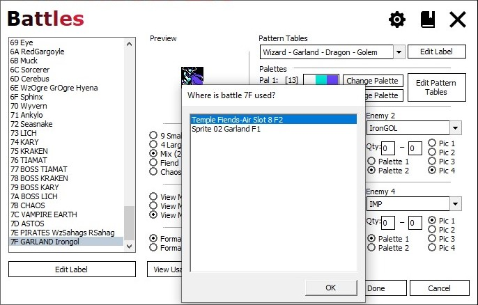
Classes
The classes editor has been tweaked to make editing class groupings and ranges easier to handle.
- Copy/Paste class data with a right-click (see below);
- Class selections for MPRange now use dropdowns instead of edits
- Class selections for HoldMP now use dropdowns instead of checkboxes
- Added dropdowns for BBMA bonus and doubled hits (2xHits)
- HoldMP and BBMA selections can be individually reassigned
- HoldMP and BBMA can also be individually disabled
- Added HP max edit field
- Mouse scroll wheel works in the level data area
- Check/uncheck all SAIVL stats for a level via Stat column right-click
- Check/uncheck all spell charges for a level via Magic column right-click
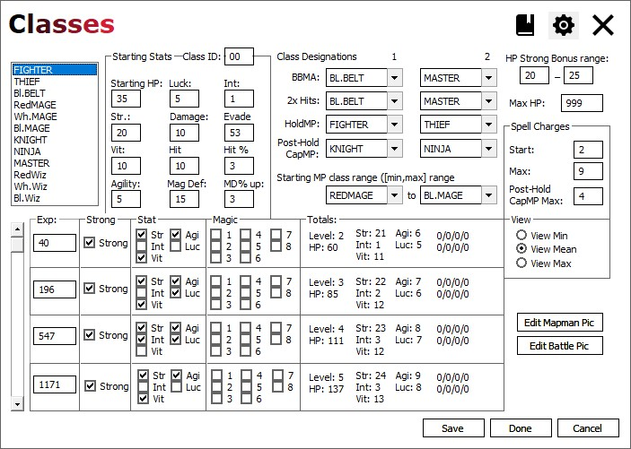
Select the class to edit in the list to the left.
Class Designations
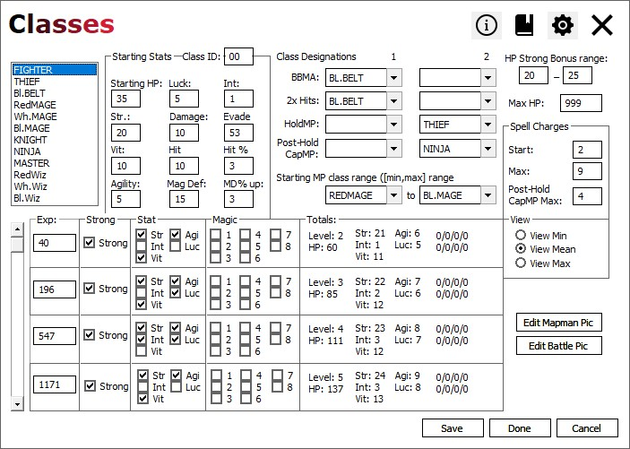
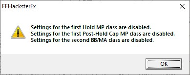
| Field | Range | Detail |
|---|---|---|
BBMA 1 and 2 | Dropdowns | Select the two classes that will receive the BB/MA stat calculations. For each, choose any class to give that class the calculations. Choosing the same class for both effectively means that only that class uses the calculations. Choosing "<IGNORE>" for both slots means that no class will use the calculations. The calculations (upon level-up) will:
NOTE: if the bytes/code for this feature differs from what the app expects,
then this feature will be disabled. The info button icon will appear to inform
the user of this. NOTE: This feature can be disabled (and therefore be ignored when loading and saving) via
Class Settings. |
| 2xHits 1 and 2 | Dropdowns | Select the two classes that will receive the BB/MA doubled hits. For each, choose any class to give that class the bonus. Choosing the same class for both effectively means that only that class gets the bonus. Choosing "<IGNORE>" for both slots means that no class will get the bonus. The bonus, which is only active with no weapon equipped, is:
NOTE: This feature can be disabled (and therefore be ignored when loading and saving) via
Class Settings. |
| HoldMP 1 and 2 | Dropdowns | Select the two classes that will have MP gains blocked. For each, choose any class to block MP gains. Choosing the same class for both effectively means that only that class has MP gains blocked. Choosing "<IGNORE>" for both slots means that no class will have MP gains blocked. The classes assigned to these slots will not gain spell charges upon level-up. NOTE: This feature can be disabled (and therefore be ignored when loading and saving) via
Class Settings. |
| PostHold CapMP 1 and 2 | Dropdowns | Select the two classes that will have MP gains capped at a lower than normal level. In the original game, this is used to limit KNIGHT and NINJA to 4 max charges. Choosing the same class for both effectively means that only that class has the lower MP limit. Choosing "<IGNORE>" for both slots means that no class observes the MP limit. This goes hand-in-hand with the HoldMP slots; the two classes selected here are semantically treated as magic-using upgrades to base classes that had magic gains blocked. e.g. in the original game, Fighter and Thief are the HoldMP classes that don't use magic, while Knight and Ninja are the Post-HoldMP classes that gain magic ability
with a lower spell charge max limit than the Wizards. NOTE: This feature can be disabled (and therefore be ignored when loading and saving) via Class Settings. |
| Starting MP Range | Dropdowns | Identifies the first and last class that will have starting spell charges in a new game. The classes specified and all classes in between (if any) will get starting spell charges. This differs slightly from FFHackster MP Range:
The class in the second list must be at the same position or later than the class in the first list; if it's not, then the second list will be set to the first list's value. NOTE: This feature can be disabled (and therefore be ignored when loading and saving) via Class Settings. |
HP Settings
| Field | Range | Detail |
|---|---|---|
| HP Strong Bonus Range | 0-255 | The range of HP added during a Strong level-up. Each time the player reaches a level with the Strong check box checked, a random amount of HP within this range is added to the normal HP gain. |
| Max HP | 0-999* | Max player HP, regardless of class. * NOTE: while there's no hard limit below 65535, displaying more than 3 digits (i.e. a value > 999) requires a Hex/Asm hack. |
Spell Charges
| Field | Range | Detail |
|---|---|---|
| Start | 0-255* | Level 1 Spell charge count for classes in the MP Range when starting a new game. * NOTE: While there's no hard limit below 255, displaying more than 1 digit (i.e. a value > 9) requires a Hex/Asm hack. |
| Max | 0-255* | Max spell charges for classes in the MP Range. * NOTE: While there's no hard limit below 255, displaying more than 1 digit (i.e. a value > 9) requires a Hex/Asm hack. |
| Post HoldMP | 0-255* | Max spell charges for the two Post-Hold CapMP classes. * NOTE: while there's no hard limit below 255, displaying more than 1 digit (i.e. a value > 9) requires a Hex/Asm hack. |
Class Editor: About the Fighter/Thief MP Code...
These bytes come in two flavors:
- Hold MP, which blocks MP gains for (by default) the Fighter and Thief;
- Capped MP, which sets the max MP for(by default) the Knight and Ninja.
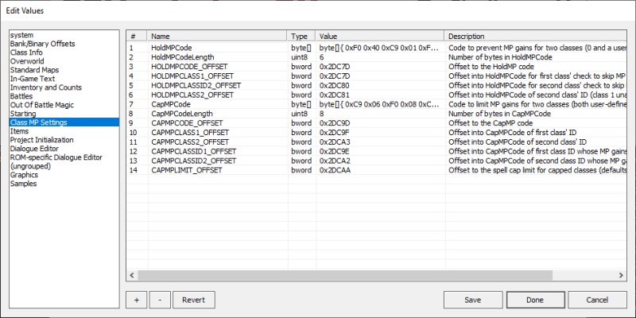
Class Editor: Paste and Swap Targets
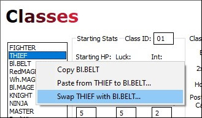
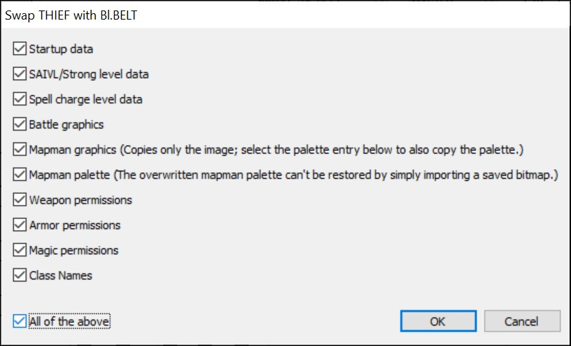
| Field | Detail |
|---|---|
| Startup Data | All startup stats (in the Starting Stats area). This includes Hit% and "MagDef" increases. Reminder: this excludes starting MP, which is a shared stat. |
| SAIVL/Strong level data | The SAIVL and Strong flags for all levels. These are respectively found in the Stat and Strong columns in the level progression grid. |
| Spell charge level data | The spell charge increase flags for all levels. These are found in the Magic column in the level progression grid. |
| Battle graphics | The battle sprites for this class. TODO: document if it also copies the palette assignment |
| Mapman graphics | The overworld map sprites for this class. |
| Mapman palette | The character-specific palette colors for the overworld sprites. Note that overworld ("mapman") palettes use both sprite-specific and sharedcolors in the palette. See Map Sprites for more info. |
| Weapon permissions | Flags dictating the weapons the class can equip. |
| Armor permissions | Flags dictating the armor the class can equip. |
| Magic permissions | Flags dictating the spells the class learn. |
| All | Check or uncheck to toggle all other flags on or off. |
- Copy the starting data from the Fighter
- Paste it onto the Ninja, overwriting the Ninja's original starting stats.
- Right-click Thief, select Copy
- Right-click BlackBelt, select the Swap option
- On the Swap options dialog, check All, then click OKYou should see that the class names swapped positions.This step effectively swaps everything about the two classes.
- Right-click Ninja, select Copy
- Right-click Master, select the Swap option
- On the Swap options dialog, check everything EXCEPT SAIVL and Spell data
- Click OKThis swaps everything except level up data.This is important, because in the original game, the base and promoted classes share level-up data, so swapping the promoted classes' level-up data in this step would actually reset the data to their original slots.
- Save the changes in the Class editor
- BlackBelt is outside starting MP range, so no starting MP.
- BlackBelt never gains MP, so he doesn't need Hold or Post-Hold MP set.
- Thief and Ninja are now normal magic users.
- The 2nd Post-HoldMP slot is still available (could give Master some spells).
Enemies
The enemies editor has received a couple of minor changes:
- Exposed all 8 bits of the Added Effect byte;
- Allows byte 15 to be edited as either a value or flags.
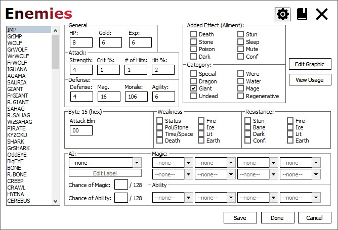
| Field | Detail |
|---|---|
| Byte 15 | Select the enemy to edit in the list to the left. Byte 15 represents the Attack Element (which I believe is unused in the original game due to a bug). A setting will change the editor to display this byte as 8 check boxes, representing element flags. |
| View Usage | Click the button to view where the enemy is used. The window that appears will display any Overworld encounter domains, Standard map encounters, spiked square encounters, and
Sprite initiated battles. Unlike the Battle editor, only battles with this specific enemy are included. For example, Garland is in Battle 7F Formation 1 (used by his TOF sprite), but not Formation 2 (IronGol on TOFR's Air floor),
so only the Sprite initiated battle is shwon here. |
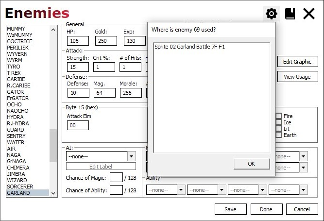
Shops
No functional changes have occurred in the shops editor.
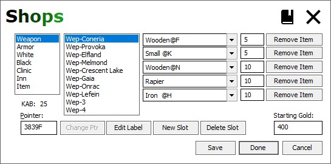
| Field | Detail |
|---|---|
| Shop Type | Specifies the types of shops, which will determine the controls show for this shop. |
| Location | The location hosting the shop. |
| Item List | The items available in the shop. These are display for all shop types except Clinic and Inn. |
| Shop Price | For the Clinic and Inn, this is the service price. |
| Item Prices | Prices of the items, range 0-65535. |
| Remove Item | Remove this item from the Item List. Any items under this slide up a slot. |
| Pointer | The ROM address of the shop's item list. To change the pointer, type in a new address, and then click the Change Ptr button when it becomes active. CAUTION! This is an expert feature; unless you understand how pointers work,
it's best to avoid using this feature. BACK UP YOUR PROJECT BEFORE ALTERING POINTER VALUES! Be VERY careful using this, as you could create an unusable store,
or crash the game if the edited pointer value is off by even one byte. |
| Edit Label | Edit the Shop Location label. |
| New Slot | Add a new Shop Location slot if there's a free slot. |
| Delete Slot | Removes the selected Shop Location, freeing up its slot. |
| Starting Gold | Start with this much gold in a new game. A 24-bit value, but limit it to 999999 to avoid display problems. |
Magic
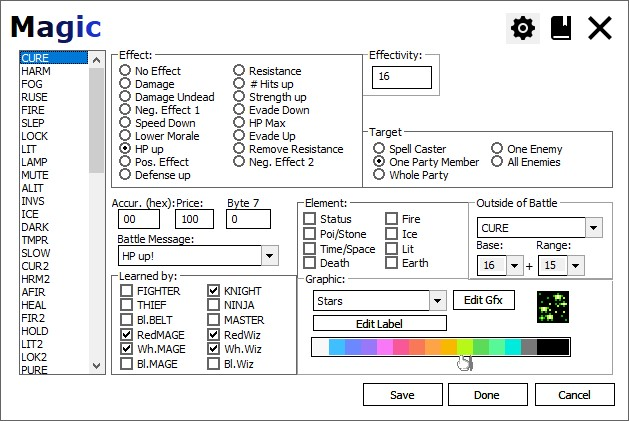
| Field | Length | Detail |
|---|---|---|
| Effect | Radio | The type of effect the spell has when cast. |
| Effectivity (Damage) | 0-255 | Strength of the spell relative to it's Effect type. |
| Effectivity (Negative Effect) | Flags | The ailments inflicted on enemy targets. |
| Effectivity (Positive Effect) | Flags | The ailments removed from player targets. |
| Accur (hex) | 0-FF | Affects the ability for the spell to hit (i.e. reach its upper damage range). |
| Price | 0-65535 | Shop cost of the spell. |
| Byte 7 | 0-255 | An unused by in the spell's data block. Allows ROM hacks to edit this value as a decimal number. |
| Element | Flags | Elements used with the spell (typically for targeting enemies) |
| Base | 0-255 | Used in out-of-battle calculations for Cure and Heal. It's best to keep the base values as powers of 2. Other values can produce unexpected results. |
| Range | 0-255 | Used as in out-of-battle calculations for Cure and Heal. These values determine the range of the spell. It's best to keep the range values as (powers of 2) - 1 (e.g. 7, 15, 31, etc.). Other values can produce unexpected results. |
Weapons
The weapons editor now displays the critical hit rate as a decimal number.
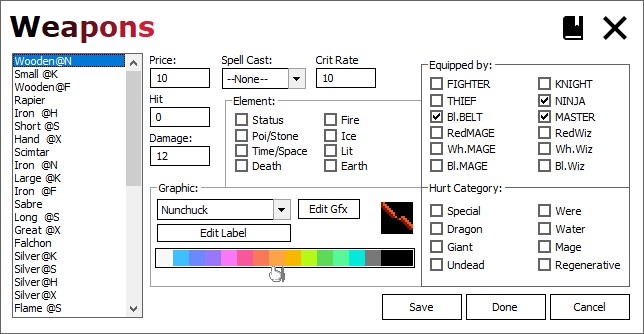
Text
- Added 4 new categories (see below)
- Double-newline was added to the Standard and DTE tables as \2
- A Find feature to search the text list
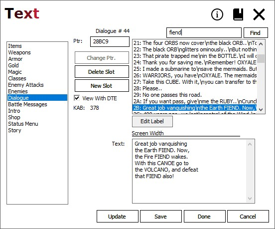
Select the text type to edit in the list to the left, then select an entry in the right-hand list.
| Field | Detail |
|---|---|
| Text category | The category of the text to edit. |
| Text entry | An in-game text string in the selected category. |
| Ptr | ROM Offset to the start of the actual text. |
| Change Ptr | Enter a new value in the Ptr field, then click this button
to update the ROM offset marking the start of the text for this slot. CAUTION! This is an expert feature; unless you understand how pointers work,
it's best to avoid using this feature. BACK UP YOUR PROJECT BEFORE ALTERING POINTER VALUES! Invalid pointers will ruin the in-game text and likely crash the game. |
| Delete Slot | Removes the selected slot from the list of text entries |
| New Slot | Adds a new slot to the text entry list |
| View with DTE | If the text contains any Dual Tile Encoding characters, view them as actual characters instead of {hex} placeholders. e.g. when checked, display RedMage instead of R{80}{52}ge. NOTE: FFHackster had DTE turned on for classes by default.Classes has DTE turned on by default. FFHEx maintains this same behavior. The class names render as normal tiles, but when updated they will silently convert to DTE text when this box is checked. Keep this in mind, especially if you also use tools outside of FFH or FFHEX to modify text. If you don't want this behavior, then select Classes and uncheck the "View with DTE" checkbox. 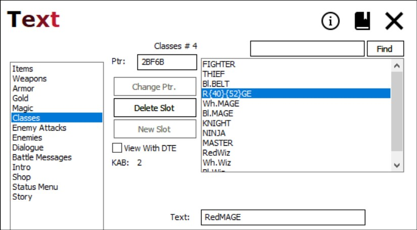 |
| KAB label | Known available bytes: the number of free bytes left for text in this category |
| Find | A text field with an adjacent Find button, that when clicked will search the text list for a match. Two things to consider:
Pressing ENTER while the text field is focused will also perform a search (as if the Find button was pressed). The search highlights the next item it finds, and loops to the beginning when the end of the list or search
text is reached. |
| Text | Field to edit the contents of the selected text entry. Can be single line or multiline. |
New Categories for FFHEX
Intro Text
The Intro category allows editing of the text displayed in the intro, normally shown when the game is powered on.
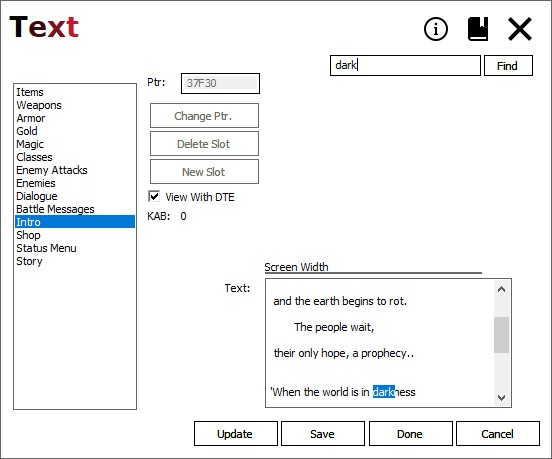
Shop Text
The Shop category edits text shown in shop menus.
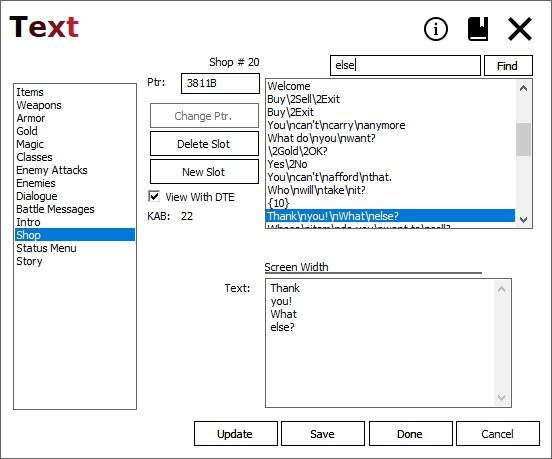
Status Text
The Status Menu category edits text shown in the inventory screen menus.
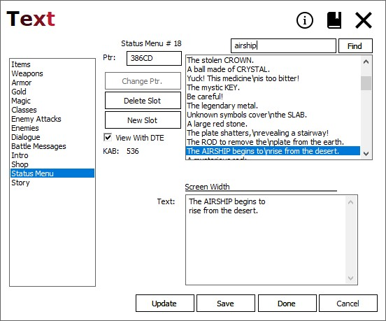
Story Text
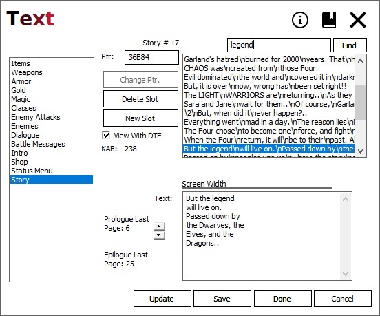
Starting Items
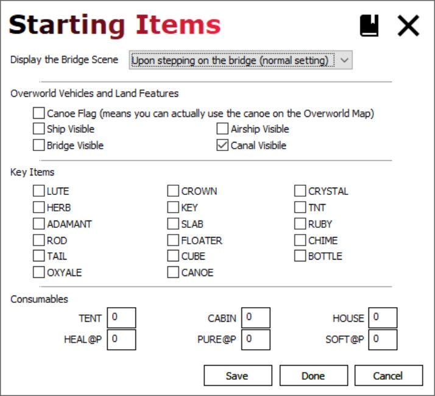
| Field | Detail |
|---|---|
| Bridge Scene | Select if or when the bridge scene occurs: Upon stepping on the bridge: normal behavior When overworld first displays: scene displays BEFORE player takes control Never: the scene is never shown during the game |
| Overworld Vehicles and Land Features | These flags determine what features are visible/available when starting a new game. Check the relevant box to make the feature available at the beginning. Canoe Flag allows the use of the canoe on the Overworld Map. The other check boxes make the vehicles or land features visible at the start. |
| Key items | Check an item to place in the party's inventory when starting a new game. The CANOE inventory item (not the canoe on the Overworld map).
Pay attention in the sprite/event editor when changing events,
as you'll want to avoid giving the CANOE item without setting the CANOE flag
and vice versa. |
| Consumables | Enter a value from 0-99 to start a new game with that quantity of the item. *Using values with more than 2 digits (i.e. a value > 99) requires a hex/assembly hack |
Sprite Dialogue
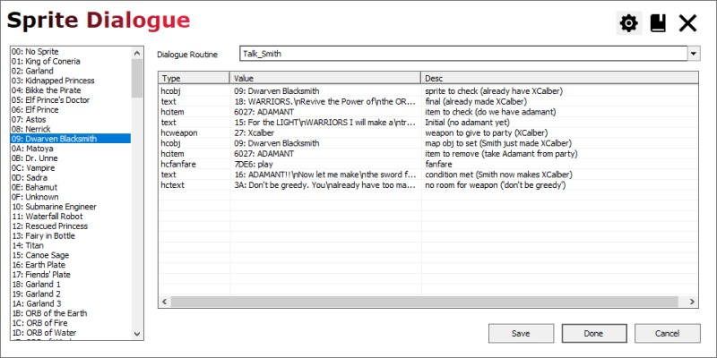
Select the sprite on the left, then select the events in the right-hand list.
List
The list contains an entry for each of the game's sprites. The names of the sprites are loaded from the sprite labels stored with the project.
Dialog Routine dropdown
The dropdown is populated with the names of the recognized routines in the dialogue file.
Grid
The grid contains the elements that make up the event. These are defined in the project's dialogue file. See Sprite Dialogue Data for more information about the data that populates this editor.
| Field | Detail |
|---|---|
| Sprite | The sprite to edit |
| Type | The type of the event. |
| Value | The value to change (either dropdown or integer) |
| Desc | A customizable description for the event |
NOTE The dialogue editor now allows selection of battles in the range 80-FF.
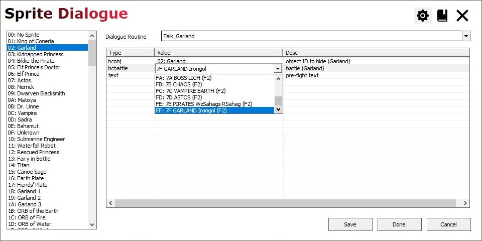
Issues
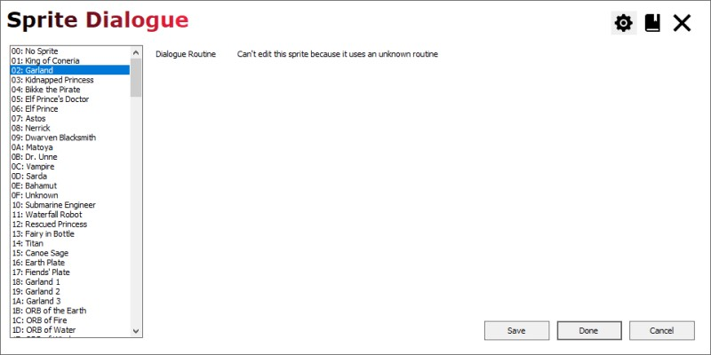
Preview of new map editors (introduced in 0.9.7.9)
- On the main window, click the Editors button
- Locate the $preview-localmap and $preview-stdmap entries
- For both, click the Source column, then select the "show as" option
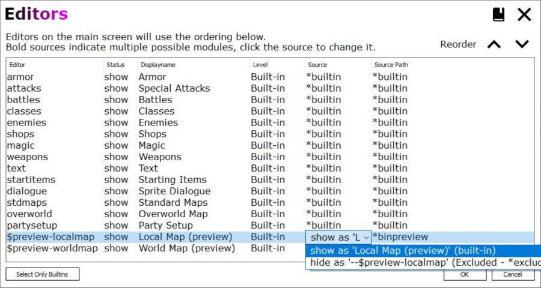
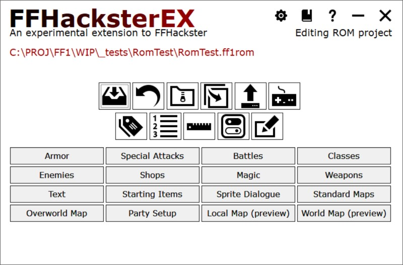
Standard Maps
The standard map editor edits tiles and sprites for all local maps in the game.
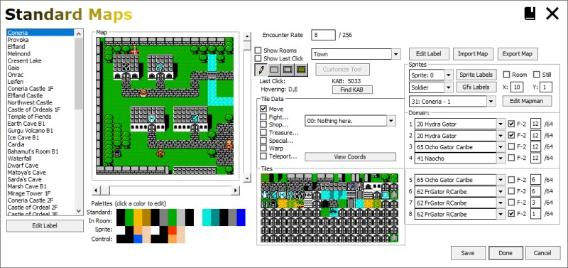
| Function | Detail |
|---|---|
| Palettes | Click a cell to alter that color for the given palette. |
| Encounter Rate | The lower the value, the less likely a battle occurs with each step. Set to 0 to disable battles Set to 255 for a battle with every step In the original game, standard maps set this to 8 except:
The lower rate on TOFR Chaos is moot since the walkable tiles on that floor don't trigger battles in the original game. |
| Tile set dropdown | Selects the tile set to use with this map. Click Edit Label button to the right of the dropdown to edit the label. NOTE The palettes DO NOT change when change the tile set. |
| Tile Data | Edits the data properties of the currently selected cell in the tile set. In the main map, right click a tile to highlight its corresponding cell in the tile set. Alternatively, click the cell in the tile set with either button to select it directly. Then, select one of the options in the Tile Data section to change the properties of the tile set cell. Doing so will immediately update all tile map tiles using that cell. |
| Tiles | Edit the tile set, which furnishes tiles used by this map. Double left click to edit the tile graphics. Double right click to edit the tile tint (used only in the editor). For more on editing tiles, see Tiles. |
| Sprites | Update the positioning, appearance , and behaviour of sprites. Assign the sprite dialogue ID of the behavior you want for the sprite on the map. e.g. In the original game's Coneria map, Arylon the dancer has sprite dialogue ID 0x35 (hex). |
| Import / Export | Also, you can export the pattern table to a bitmap, edit that with an external editor, and import the result. Take care to respect the expectation that this bitmap should be either 16 color (4-bit) or 256 colors (8-bit). Both bit sizes are quantized to be NES palette-compatible. |
| Domain | Set up the battles encountered for the map. Select the battle from the first dropdown. Check F-2 to use formation 2 for the battle on that line. The probability values next to the "/64" labels are global, shared by the Overworld and all Standard maps. The total of the 8 values should be 64. |
Preview Standard Map Editor
- Controls have been reorganized to move some related elements closer together
- Hold the CTRL key while clicking the scroll bar to speed up scrolling
- A resizable popout map window can be invoked with a button or F7
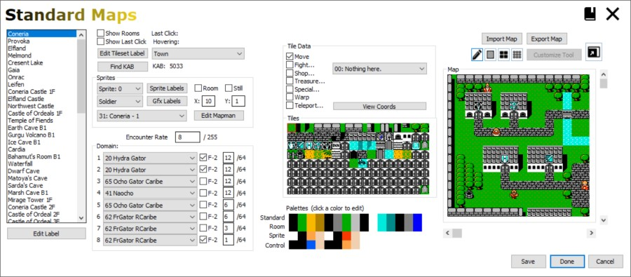
While the drawing tool buttons have been moved and redesigned, their functionality hasn't changed.
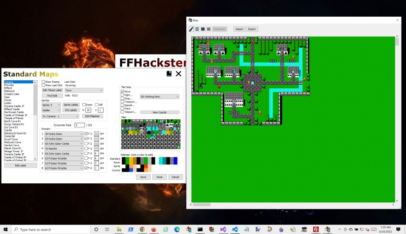
| Active window | Key/Button | Function |
|---|---|---|
| Main Editor | Popout Button | Displays the popout and hides the embedded map area. |
| Main Editor | F6 | Toggle focus between main editor and popout windows. |
| Main Editor | F7 | Toggles visibility between the embedded map and popout window. |
| Main Editor | ESCAPE | If the popout is open, closes the popout. Otherwise, closes the editor. |
| Popout | F6 | Toggle focus between main editor and popout windows. |
| Popout | F7 | Closes the popout window. |
| Popout | ESCAPE | Closes the popout window. |
Overworld Map
The overworld map editor edits tiles and map objects.
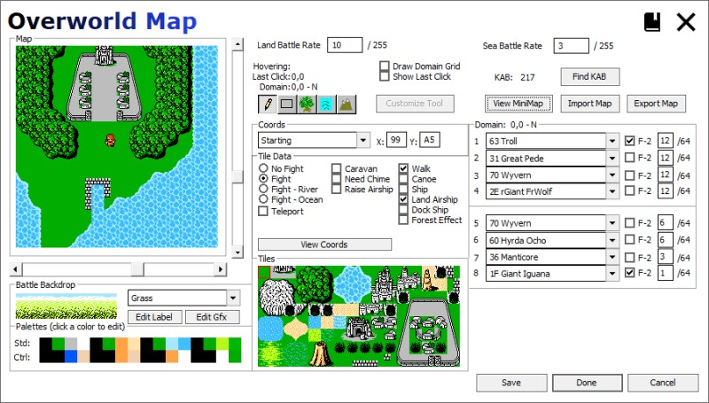
| Function | Detail |
|---|---|
| Battle Backdrop | Select and edit the backdrop used in battles on this tile. NOTE If the tile is a teleport to a standard map, then the backdrop
specified here will be used for all standard map battles
until returning to the Overworld - even if teleporting
from one standard map to another. This is notable in the Sky Castle and TOFR.
|
| Palettes | Click a cell to alter that color for the given palette. |
| Encounter Rates | The lower the value, the less likely a battle occurs with each step. Set to 0 to disable battles Set to 255 for a battle with every step In the original game: Land is set to 10 Sea is set to 3 (less frequent battles while sailing) |
| Tile Data | Edits the data properties of the currently selected cell in the tile set. In the main map, right click a tile to highlight its corresponding cell in the tile set. Alternatively, click the cell in the tile set with either button to select it directly. Then, select one of the options in the Tile Data section to change the properties of the tile set cell. Doing so will immediately update all tile map tiles using that cell. |
| Tiles | Edit the tile set, which furnishes tiles used by this map. Double left click to edit the tile graphics. Double right click to edit the tile tint (used only in the editor). For more on editing tiles, see Tiles. |
| Import / Export | Also, you can export the pattern table to a bitmap, edit that with an external editor, and import the result. Take care to respect the expectation that this bitmap should be either 16 color (4-bit) or 256 colors (8-bit). Both bit sizes are quantized to be NES palette-compatible. |
| Domain | Set up the battles encountered for this domain grid square. Select the battle from the first dropdown. Check F-2 to use formation 2 for the battle on that line. The probability values next to the "/64" labels are global, shared by the Overworld and all Standard maps. The total of the 8 values should be 64. |
Preview Overworld Map Editor
- Controls have been reorganized to move some related elements closer together
- Hold the CTRL key while clicking the scroll bar to speed up scrolling
- A resizable popout map window can be invoked with a button or F7
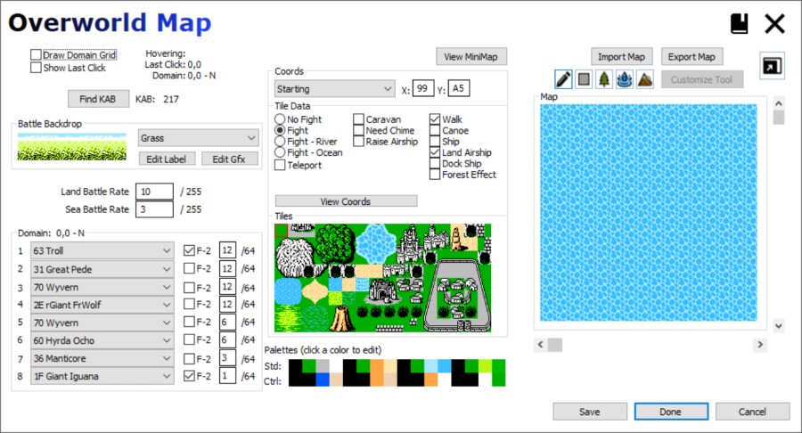
While the drawing tool buttons have been moved and redesigned, their functionality hasn't changed.
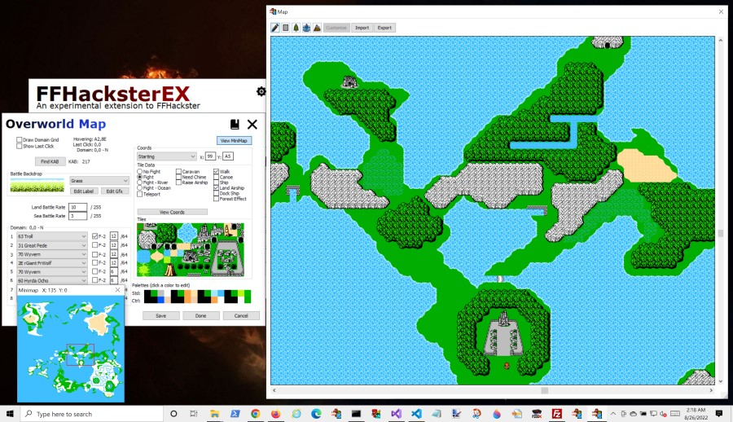
| Active window | Key/Button | Function |
|---|---|---|
| Main Editor | Popout Button | Displays the popout and hides the embedded map area. |
| Main Editor | F6 | Toggle focus between main editor and popout windows. |
| Main Editor | F7 | Toggles visibility between the embedded map and popout window. |
| Main Editor | ESCAPE | If the popout is open, closes the popout. Otherwise, closes the editor. |
| Popout | F6 | Toggle focus between main editor and popout windows. |
| Popout | F7 | Closes the popout window. |
| Popout | ESCAPE | Closes the popout window. |
| Minimap | F6 | Toggle focus between main editor and popout windows. |
| Minimap | F7 | Toggles visibility between the embedded map and popout window. |
| Minimap | ESCAPE | Closes the Minimap window. |
Party Setup
Configure the default party settings, and control how many initial classes are selectable on the new party screen.
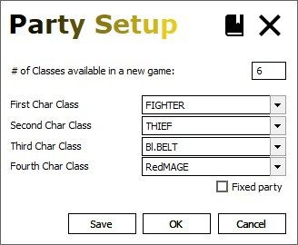
| Field | Detail |
|---|---|
| # of Classes | The number of classes available to select in a new game. *Note that the first 6 classes display fine, others after that have display errors. A ROM hack is needed to fix those display errors. |
| Char Class | The default class for the given character slot. |
| Fixed Party | If checked, the classes cannot be changed on the new party screen. This forces the player to start the game with the default party. |
NOTE: Fields in tables with this tinted background require some hex/assembly hacking to work properly. Modifying values in the editor will not trigger visible changes in the game; hex/code changes are required to accomplish that.